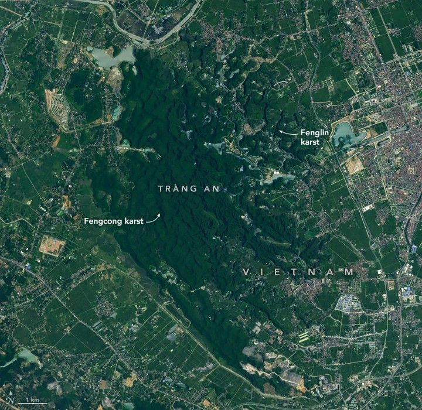

The Towers of Tràng An
The limestone in Vietnam’s Tràng An Landscape Complex has many stories to tell. The rock, sculpted over time into dramatic towers and precipitous cliffs, is now draped in lush tropical rainforest and dotted with temples. It also contains records of past sea level fluctuations and of human adaptation to environmental changes. UNESCO, part of the United Nations, designated the area a World Heritage Site for its natural and cultural treasures in 2014.
The OLI-2 (Operational Land Imager-2) on Landsat 9 acquired this image of Tràng An’s mountains on June 2, 2025. The roughly 60 square kilometers (23 square miles) of terrain is surrounded by both urban areas and rural land in Ninh Bình province. The region’s many rice paddies will turn brilliant golden hues in autumn as harvest season approaches, contrasting with the dark green forest.
Mature karst topography like Tràng An’s occurs throughout Southeast Asia, such as in China’s Guangxi Province and coastal Vietnam. In fact, Tràng An is sometimes referred to as the “inland Hạ Long Bay,” containing similar lofty features to the iconic setting but located about 30 kilometers (20 miles) from any coastline.
This photograph looks out over a valley where a calm river meanders through yellow fields. Steep-sided rock towers covered in green vegetation rise from both sides of the valley.
Five million years of erosion has shaped this landscape into its current form. Helped along by the humid tropical climate, water has eaten away at limestone bedrock through cracks and joints to leave behind towers up to 245 meters (800 feet) tall. Areas where towers stand isolated, known as fenglin karst, are prevalent on Tràng An’s eastern side, while those where towers are connected by sharp ridges, or fengcong karst, are common in the west. The two types of topography represent different stages of karst evolution.
Hidden from view of the satellite sensor, an intricate network of caves and subterranean streams infiltrates the peaks. Some of these waterways are navigable by small boats. Tràng An has a hydrology all its own, fed solely by rainwater.
Archaeological remnants suggest that humans have utilized Tràng An’s caves for around 30,000 years. Researchers are investigating how this usage shifted among caves in different locations and elevations—up to 140 meters (460 feet)—as sea levels changed. The fluctuations were significant enough for the mountains to become partially submerged at times. Geologists have used notches in the limestone cliffs to reconstruct sea levels from the past 10,000 years.
Visitors to Tràng An today can experience the landscape via boat tours, such as in the popular Tam Cốc area where guides row boats with their feet. Or they may explore sites including the Bich Dong Pagoda, with its Buddhist temples on three different levels of a mountain. Moviegoers may recognize the Tràng An landscape from scenes in the 2017 film Kong: Skull Island.